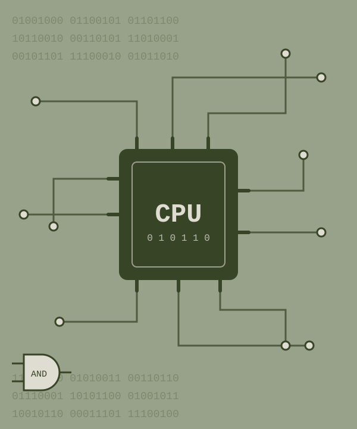
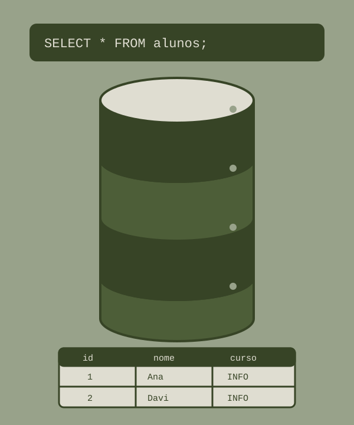
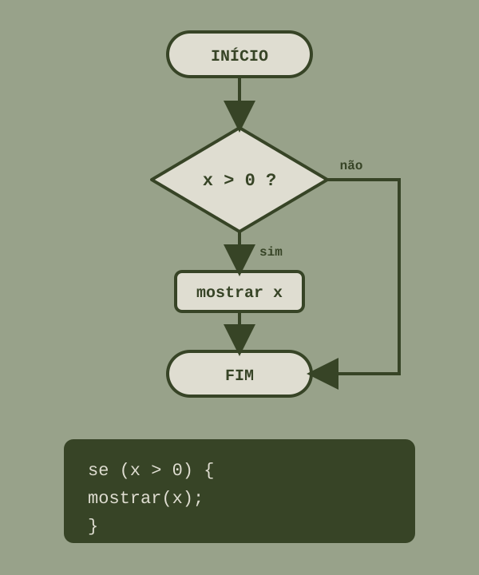
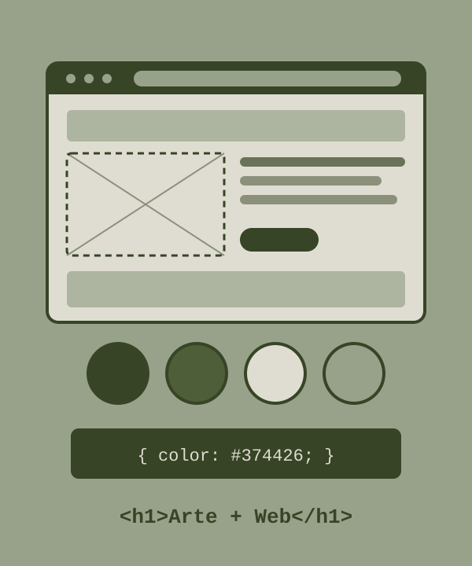

Entendendo as matérias técnicas iniciais do IF

Esta disciplina é a base de toda a computação. Ela estuda como o hardware (as peças físicas) e o software (os programas) se comunicam e trabalham juntos. É a matéria que abre a "caixa preta" do computador ou do smartphone para mostrar que eles não funcionam por mágica, mas sim através de uma lógica matemática rigorosa e de um organizador central: o Sistema Operacional (como Windows, Linux, macOS, Android ou iOS).
O que você aprenderá nela?
Um banco de dados é um sistema organizado para armazenar, gerenciar e recuperar informações de forma rápida e segura. A disciplina de Banco de Dados é um dos pilares do curso de Técnico de informática.
O que você aprenderá nela?


A disciplina de Lógica de Programação tem como objetivo ensinar os fundamentos da programação e do pensamento computacional.
O que você aprenderá nela?
Análise: A disciplina possui uma proposta bem organizada, começando pelos conceitos básicos e evoluindo para conteúdos mais complexos. Além de ensinar programação, ela também incentiva o raciocínio lógico e a reflexão sobre o impacto social da tecnologia, tornando o aprendizado mais completo e preparando os alunos para as próximas disciplinas da área de informática.
A disciplina integra conhecimentos de Arte e Informática, com foco no desenvolvimento de páginas para a internet. A proposta é trabalhar desde o planejamento de um projeto até sua execução, considerando tanto os aspectos técnicos quanto os visuais.
O que você aprenderá nela?
Análise: Apesar de a proposta curricular apresentar as artes como um dos eixos centrais da disciplina, a prática parece seguir um caminho diferente. O desenvolvimento web, especialmente o uso de HTML e CSS, acaba ocupando um espaço mais significativo, enquanto os conteúdos artísticos ficam em segundo plano. Essa diferença levanta uma questão sobre a diferença entre a proposta original da matéria e aquilo que realmente é trabalhado em sala de aula.

As matérias técnicas do primeiro ano são de extrema importância para apresentar a área de informática para os alunos que estão ingressando no curso. Os fundamentos computacionais servem para contar a história dos computadores, os diferentes componentes que ele possui, os sistemas de numeração e o básico do excel. A matéria de arte e desenvolvimento web trata de como pensar no melhor site possível para o usuário, ensinando HTML e CSS, além de wireframe e estilos de layout. Banco de dados ensina SQL e os Sistemas gerenciadores de banco de dados, enquanto lógica de programação ensina os primeiros passos para criar apps e jogos. Todas essas habilidades são pensadas para que o aluno crie uma base para entrar na área da informática.
No entanto, nos outros anos algumas dessas matérias poderiam ser retomadas para maior aprofundamento, e nem sempre todas elas são suficientes para os alunos sentirem confiança para utilizá-las, como banco de dados e css. Além disso, nos outros anos as únicas linguagens de programação inseridas na base curricular são PHP e JavaScript, que apesar de serem muito úteis, poderiam ser incrementadas melhor se os alunos também tivessem conhecimento de Python ou C++, linguagens necessárias para se trabalhar na área de tecnologia atualmente.